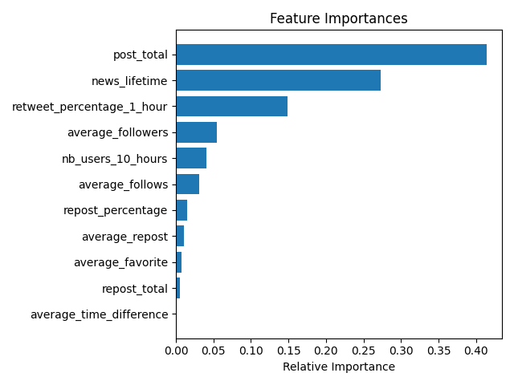

The following figures provide insights into the model's performance:
This image shows the confusion matrix, which indicates the model's classification performance.
This image shows the feature importance, which explains which features were most influential in the model's predictions.
